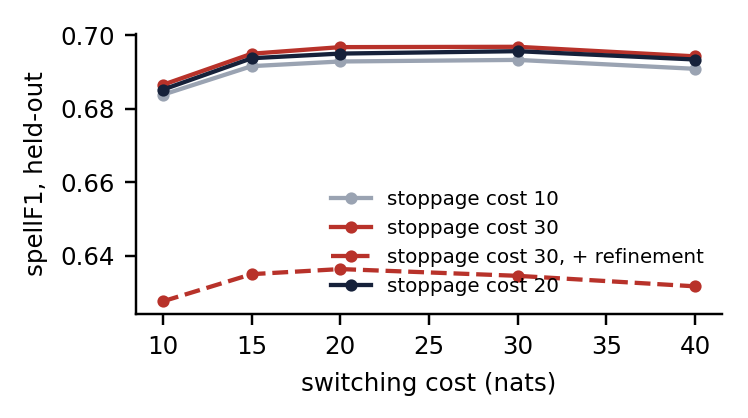

Who has the ball? Possession from automatic tracking, learned on other matches
Team Cochinae — Sebastian Dulong Salazar · Santiago Fernández del Castillo · Ulises Quevedo
More than a Hack 2027 · Initial Challenge · code: github.com/dulongski/cochinae-mtah-2027
We label every frame of FC Barcelona vs Athletic Club as home, away or dead ball. We read it from the shape of the 22 players and from the ball, learn that reading on 20 other matches (SkillCorner open data), and decode it into whole possessions with a few football rules. Nothing is trained or tuned on this match's labels or video. Held-out on other matches: spellF1 0.697. Public check on this match: spellF1 0.607 / macroF1 0.843 (baseline 0.326 / 0.621).
1The task, and why it is about intervals
Each of the 199,319 video frames gets H, A or D. The ranking metric, spellF1, does not count frames. It counts possessions, and a predicted possession scores only if it overlaps a real one well (time-IoU 0.3–0.7). Two things follow:
Flicker is fatal. A model that is 90% right per frame but changes label every few frames invents hundreds of possessions and scores near zero.
Boundaries matter. A possession found one second late is worth about two thirds of one found on time.
So we treat it as cutting the match into segments, not as classifying frames one by one.
SkillCorner open data: 20 matches, tracking + “phases of play” with the team in possession (MIT licence)
all training and all tuning
Not used for training or tuning: the ground truth and the video of this match. The public 5 minutes are scored only at the end, as a check. Smart Tagging, the broadcast feed and the video were tried as inputs and dropped (§6).
Figure 1. The same feature code runs on SkillCorner (to learn) and on this match (to predict). Red = learned on external data only.
3The heuristics
Each heuristic is a piece of football common sense, written as a feature or as a rule.
H1The team with the ball spreads out and pushes up.
In possession, a team gets wider, longer and higher, and runs forward. The team without it compacts and drops. We measure this every frame for both teams: 33 shape descriptors (centroid, spread, width, depth, forward speed, and the differences between teams), each also averaged over ±0.5 s and ±2 s. Shape is available even when the ball is not.
H2Whoever is closest to the ball probably has it, but only when someone is close.
When the ball is tracked, the distance from each team to it, and their difference, is strong evidence. When nobody is within a few metres (a pass in flight), it says little, and the model learns to discount it.
H3A dead ball looks physical.
In a stoppage players slow down, the ball stops travelling or leaves the pitch, and it often sits near a line with one or two players around it (throw-ins, corners, goal kicks). Eight simple cues describe exactly that.
H4A missing ball usually means a stoppage.
The ball is missing on 41% of graded frames, but in long blocks (median 11 s), and almost all of those end up decoded as dead ball. Ball visibility is therefore a feature, not just a gap to fill.
H5“Home” is not a style.
Every training frame is also shown with the two teams swapped and the label flipped. The model must recognise possession, not Barcelona.
H6Possession is sticky.
A touch or a deflection does not change possession; control does. The decoder (Viterbi) pays a fixed cost to switch team, so a switch needs about 1–2 s of clear evidence. A loose ball stays with the last team in control.
H7Stoppages are real stoppages.
A dead-ball stretch lasts at least 1 s and costs something to enter and leave. Without this, the cheapest way for the decoder to change team is a fake one-frame stoppage, and it finds it.
H8Use what is known for sure.
The documentation states that the graded frames before the second-half kickoff (110,808–113,741) are all dead ball, so we set them to D. 1,746 of them would otherwise have been called live.
4Learning without the answer key
SkillCorner's 20 matches are resampled to 25 Hz and moved to the same pitch coordinates. Labels come from their phases of play: the team in possession inside a phase, dead ball elsewhere. That gives 591k training frames, one every 0.4 s, with the swap of H5. Two gradient-boosted classifiers (scikit-learn) learn P(away) on live frames and P(dead) on all frames.
Tuning is cross-validated on SkillCorner too. In each of 4 folds we train on 15 matches and decode the other 5 exactly as we decode Barça–Athletic, then score them with the official spellF1. We search 60 decoder settings: switching cost, stoppage cost, minimum stoppage length, and an optional boundary refinement. The winner is switching 30, stoppage 30, minimum 1 s, no refinement. The top ten settings lie within 0.003, so the choice is stable.
Held-out on other matches: the team classifier is right on 93.6% of live frames, and the dead-ball classifier reaches AUC 0.985 (16 train / 4 test). The full decoder scores spellF1 0.697 and macroF1 0.909 (20 matches, 4-fold).

Figure 2. Tuning on SkillCorner only (20 held-out matches). Possession is flat for any switching cost from 15 to 40 (H6), so the choice is not fragile. Moving restarts to the players' slowest moment, a rule we had used before, costs 0.06 on other matches, so it is off.
5Results
evaluation
spellF1
macroF1
SkillCorner, 20 held-out matches
0.697
0.909
This match, public 5 min (check only)
0.607
0.843
Official baseline, public 5 min
0.326
0.621
On the full match we report 211 possessions (mean 15.7 s) and 48% of graded time dead. With only 17 possessions in the public window, its noise band is about ±0.4 spellF1. That is why no choice was made on it.
6Tried and dropped
Self-supervised version. We learned shape from frames where the ball is at one player's feet, then self-trained. It scored 0.542 on the public check. It used the public window for one small model, so we replaced it to comply with the rules.
Smart Tagging team tags: right on only 70% of live frames. Its set pieces added nothing.
“Last player to touch it keeps it”: too brittle to tracking noise.
Ball-track cleaning (removing jumps, bridging short gaps): no gain.
Broadcast tracking as a second ball: we aligned it to within a few frames, but it fills only 8.5% of the gaps, because both cameras lose the ball at the same moments.
Off-the-shelf video ball detectors: the ball is 3–5 px in this camera; fewer than half the detections fall within 2 m of it.
7Limits and reproduction
Limits. SkillCorner comes from broadcast video with players estimated off-screen, while this match comes from a tactical camera, so calibration may shift. Dead-ball labels are the gaps between phases, so they are weak. Possessions shorter than about 1 s are mostly merged into their neighbours.
Reproduction../reproduce.sh rebuilds everything from scratch (about 50 min on a laptop): download, features, training, tuning, decoding and validation. It is deterministic, and two runs give the same file (SHA-256 80820af0…).